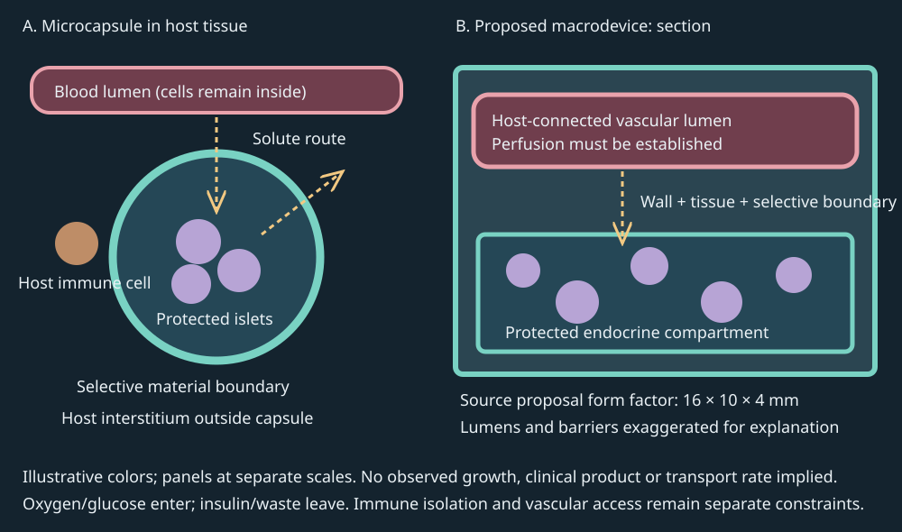

10. Diabetes technologies and experimental cell therapy
An implanted islet can secrete insulin when glucose rises and still fail to regulate the recipient's glucose. Oxygen may not reach its center, a tissue layer may develop outside its capsule, or insulin may reach the circulation too slowly. An electronic system has a different vulnerability: a correctly functioning pump can deliver an inappropriate response to an old or biased sensor value. Both failures arise from confusing a component's function with a complete physiological route. The design problem is to restore regulation while accounting separately for cell survival, selective transport, measurement, delayed action, and evidence of benefit.
The topic spine follows official NPTEL L22–L23. Complete captions and attributed bounded source-frame audits inform coverage; no continuous audio/video review or fresh image inspection by this author is claimed. All diagrams, trajectories and numerical models here are original teaching constructions. Research results and product-specific claims are distinguished from them. Clinical and regulatory sources were checked on 4 November 2026; the examples do not constitute an exhaustive inventory or a treatment protocol. Evidence and access limits.
10.1 Replacing secretion requires more than replacing cells L22 02:17–14:32
A pancreatic islet is a multicellular endocrine cluster. Its beta cells release insulin; its alpha cells release glucagon. Insulin changes target-cell signaling and metabolism, including glucose uptake in responsive tissues and hepatic glucose production. It does not carry glucose as a passenger or itself convert glucose into glycogen. The tissue-specific mechanisms developed in Chapter 9 matter here because an implant must communicate with the same distributed system. A device that merely contains insulin-producing cells has not recreated every function of a pancreas.
Type 1 diabetes involves immune-mediated beta-cell loss and inadequate endogenous insulin production. It can develop at any age. Residual secretion varies, so neither childhood onset nor literal destruction of every beta cell is a defining universal requirement. Severe insulin deficiency also changes hepatic fuel handling and ketone production; its danger is not explained by saying that all cells, including the brain, abruptly become impermeable to glucose. Brain glucose transport is not the muscle/adipose GLUT4 pathway. The NIDDK type 1 overview establishes the autoimmune disease and insulin-replacement context without making the implant a cure.
Cell replacement introduces living cells intended to supply a missing function. An allogeneic graft comes from another individual of the same species; a xenogeneic graft crosses species. Human islets in a mouse are therefore a xenogeneic experiment even though the donor tissue is human. Stem-cell-derived islets address a supply problem by producing endocrine cells through differentiation, the process of acquiring a specialized cellular state. This does not automatically solve immune compatibility, maturity, safety, survival, manufacturing consistency or delivery. Expanding a cell source and demonstrating durable physiological function are separate achievements.
Three immune problems must be separated. Allorejection is an immune response against another individual's graft. Autoimmunity targets the recipient's own biological antigens and can remain relevant to replacement beta cells. A foreign-body response is the host reaction to an implanted material, involving inflammatory cells, surface interactions and tissue remodeling. A material can reduce one response without abolishing the others. Immunosuppression can protect a graft while imposing its own burdens. Neither a universal 24–48-hour graft lifetime nor a fixed small number of donor operations can be inferred from these mechanisms.
The opening design case has four named regions: blood plasma inside vessels, host interstitial fluid outside vessels, the hydrated implant matrix, and the living islet cells. A material boundary separates host tissue from the protected cell-containing region. An immunoisolation strategy seeks to restrict damaging immune access while permitting useful exchange. Oxygen and glucose must enter; insulin and metabolic wastes must leave. These substances differ in size, binding, consumption and transport properties. Excluding whole immune cells does not imply exclusion of every antibody, complement component or inflammatory signaling molecule. A pore drawing alone cannot establish the selectivity of a real material.
The generic balance is reusable. Let \(n_i\) denote an amount of a named substance in compartment \(i\), \(V_i\) its volume, and \(c_i=n_i/V_i\) its mean concentration. Let \(F_{ji}\) be transfer into it from \(j\), \(F_{ik}\) transfer out to \(k\), \(S_i\) production and \(R_i\) removal, all amounts per time. Conservation gives
\[\frac{dn_i}{dt}=\sum_jF_{ji}-\sum_kF_{ik}+S_i-R_i.\tag{10.1}\]A transfer leaving one tracked region enters another with the same amount. A chemical reaction can remove the selected molecular species without destroying its constituent atoms. The balance does not yet predict any rate. A biological secretion law, a material transport law and a measurement model answer different missing questions. Keeping them separate prevents a successful glucose trace from being used as proof of every proposed mechanism.
Evidence also has compartments. A material screen asks whether a host response differs between candidates. A functional graft experiment asks whether viable implanted cells alter a physiological endpoint. A human trial adds patient selection, adverse events and relevant comparators. Authorization applies to a specified product and indication. As checked on 4 November 2026, the FDA record and LANTIDRA label identify donor-islet therapy for a defined adult population with recurrent severe hypoglycemia despite intensive management, delivered by hepatic portal infusion with immunosuppression. This is distinct from an immunoisolated capsule and from an electronic pump system. Product approval cannot be transferred to every alginate formulation merely because alginate has other medical uses.
10.2 Screening a surface and testing a graft answer different questions L22 14:32–30:51
Fibrosis is tissue remodeling with accumulation of extracellular matrix, including collagen. Around an implant it can increase the path between a vessel and the protected cells. Macrophages participate in material responses; fibroblasts and contractile myofibroblasts contribute to matrix deposition and remodeling. These are interacting processes, not a mandatory sequence in which a failed first immune system activates a separate second immune system. A collagen-rich layer can impede exchange without becoming perfectly impermeable. Its consequences depend on thickness, diffusivity, local supply and cell demand.
Physical, biological and chemical interventions address different parts of this problem. Geometry and surface texture alter contact and transport; locally delivered signals can alter host behavior; chemical modification changes the material surface encountered by proteins and cells. Increasing capsule diameter can change a host response in a particular experiment while worsening diffusion distance. Systemic immunosuppression is different from local material modification. No strategy is established as universally best by placing it between two alternatives in a diagram. The relevant experiment measures both the intended improvement and the function potentially sacrificed.
Alginate is a polysaccharide that can form hydrated gels. A hydrogel is a water-containing polymer network; hydration does not imply unrestricted transport. The source's chemistry example joins azide and alkyne building blocks through copper-catalyzed cycloaddition to create triazole-containing modifiers. Hydrophilic components interact favorably with water, whereas hydrophobic components favor other molecular environments. These are useful design descriptors, not a proof that any hydrophilic modifier will remain attached to any hydrated substrate. Coupling chemistry, surface presentation, stability and biocompatibility require experimental characterization. No literal 100% synthesis yield is assumed here.
Mukherjee et al., 2023, DOI 10.1038/s41551-023-01016-2, provide the primary research anchor: 211 analogs were synthesized, with 149 selected for in-vivo screening after characterization, and formulations were linked to cellular barcodes, using donor-cell genetic differences to recover formulation identity after pooled implantation. The reported screening throughput was 20 formulations in one mouse and 100 in one non-human primate. Z4-A10 was subsequently used for human-islet encapsulation in diabetic mice. Fig. 5 reports glucose responses and human C-peptide, including an 80-day measurement. C-peptide is a peptide released alongside insulin when beta cells process insulin's precursor. A human-specific C-peptide assay in a mouse therefore supports secretion from the human graft; it does not by itself establish adequate regulation or long-term safety. Unlike an insulin measurement alone, C-peptide is not supplied by ordinary injected insulin preparations. The NLM C-peptide explanation describes this distinction between endogenous secretion and externally supplied insulin. Human tissue was the donor source; it does not make this a human treatment study. These identifiers correct ambiguous caption spellings.
A barcode is an identity tag, not a fibrosis measurement. Pooled recovery links a capsule to its formulation; microscopy and other assays assess its host response. A candidate can be lost during recovery, have different starting representation, or perform differently when implanted alone. Independent validation is therefore needed after ranking. The screen and the functional graft test also use different cells for different purposes: barcode-carrying cells establish material identity, whereas islets supply the intended endocrine function. Combining their roles would manufacture an unsupported mechanism.
Suppose, as an original inference exercise, two recovered formulations have identical collagen staining but one yields twice as many barcode reads. The larger count might reflect greater recovery, more surviving barcode cells, amplification differences or input imbalance. It is not automatically half as much fibrosis. Conversely, a formulation with low alpha-smooth-muscle-actin staining has a low signal for that marker under the assay conditions; the marker is a protein expression readout rather than a complete cell identity. An absence of one stain cannot establish the absence of every immune cell or all future fibrosis. Multiple readouts answer different causal questions.
A separate precedent must retain its own duration and model. Vegas et al., 2016, reported glycemic correction with encapsulated human stem-cell-derived beta cells in chemically diabetic, immunocompetent C57BL/6J mice until implant removal at 174 days. That endpoint did not establish a universal six-month material expiration or elimination of human autoimmunity. “The experiment ended while the graft functioned” and “the graft failed at that time” imply different survival evidence. A later hoped-for multi-year macrodevice cannot inherit this duration as a demonstrated result.
The recurring case now has a better material candidate, but survival remains a transport problem. Lower fibrosis may reduce external resistance; it cannot supply oxygen without a source or remove the demand created by densely packed living cells. The next calculation makes that trade-off explicit.
10.3 Loading density, oxygen supply and retrieval compete L22 31:07–40:12
An islet equivalent, abbreviated IEQ (validated quantification study), standardizes islet volume to a reference sphere of 150 μm diameter. It is neither one beta cell nor necessarily one anatomical islet. Cell composition, viability and secretory capacity can vary at the same IEQ. The primary paper's Extended Data Fig. 6 specifies 2,000 IEQ per mouse at loading densities of 4,000, 8,000 and 16,000 IEQ/mL, corresponding to 500, 250 and 125 μL. This is a material-loading comparison in animals, not a human dose conversion.
Let \(N_{\mathrm{IEQ}}\) be the loaded islet-equivalent quantity and \(\rho_{\mathrm{IEQ}}\) its density in IEQ/mL of the stated formulation volume. The identity \(N_{\mathrm{IEQ}}=\rho_{\mathrm{IEQ}}V_{\mathrm{load}}\) gives \(V_{\mathrm{load}}=N_{\mathrm{IEQ}}/\rho_{\mathrm{IEQ}}\). Doubling density halves this defined volume. It does not halve oxygen demand per IEQ or establish the volume of a packaged device. Shells, support material, lumens and packing spaces require their own volume accounting. The source's one-million-islet and 4–5-liter assertions cannot be validated without resolving the unit and volume definitions; they are not adopted as clinical design inputs.
At a local surface, transport is described by flux density: amount crossing per area per time. Let \(J_s\) denote inward flux density of solute \(s\) in μmol/(cm²·min), \(P_s\) its permeability in cm/min, \(A\) the exchange area in cm², and \(c_{h,s},c_{g,s}\) host and graft-region concentrations in μmol/mL. Because 1 mL equals 1 cm³, the ideal constitutive law and total inward rate are
\[J_s=P_s(c_{h,s}-c_{g,s}),\qquad F_s=A J_s.\tag{10.2}\]The concentration difference supplies direction; permeability and area determine conductance. This law approximates a well-mixed region separated by a passive linear barrier, with partition effects incorporated in permeability. It omits binding, spatially varying demand and active transport. The host and graft concentrations are concentrations of the same species; glucose cannot be substituted into the oxygen difference. Insulin's production term also differs from oxygen consumption.
For flat layers in series at steady flux, define layer thickness \(L_j\) in cm and effective diffusion coefficient \(D_j\) in cm²/min, with unit partition coefficients for this example. Each concentration drop equals \(J_s L_j/D_j\). Adding drops across layers therefore yields \(P_{s,\mathrm{eff}}^{-1}=\sum_j L_j/D_j\). A synthetic 0.010-cm layer with \(D=0.001\) cm²/min has resistance 10 min/cm. Adding 0.020 cm with the same diffusion coefficient makes total resistance 30 min/cm and cuts permeability from 0.100 to 0.0333 cm/min. The added layer slows exchange by a factor of three in this model; it does not set flux identically to zero. Curved geometry, partitioning and cellular consumption require a more detailed calculation.
A minimal dynamic graft model applies (10.1) to a fixed, well-mixed graft-region volume \(V_g\). Define \(a_s=AP_s\), in mL/min, a constant external concentration \(c_{h,s}\), and first-order consumption constant \(k_s\), in min⁻¹. First-order means consumption rate is proportional to the amount present. With no internal production,
\[V_g\frac{dc_{g,s}}{dt}=a_s(c_{h,s}-c_{g,s})-k_sV_gc_{g,s}.\tag{10.3}\]Let \(\lambda_s=a_s/V_g+k_s\). Setting the derivative to zero gives the steady concentration \(c_{\infty,s}=a_sc_{h,s}/(a_s+k_sV_g)\). Subtracting that value from (10.3) gives exponential relaxation:
\[c_{g,s}(t)=c_{\infty,s}+[c_{g,s}(0)-c_{\infty,s}]e^{-\lambda_st}.\tag{10.4}\]The characteristic time is \(1/\lambda_s\). It describes approach to this model's steady concentration, not an experimentally measured graft lifetime. For synthetic oxygen parameters \(V_g=1\) mL, \(a_O=0.05\) mL/min, \(k_O=0.05\) min⁻¹, and \(c_{h,O}=0.20\) μmol/mL, the steady concentration is 0.10 μmol/mL and the time constant is 10 min. Starting at zero gives 0.063212 μmol/mL at 10 min. The cells consume oxygen while it enters, so equality with the external concentration is not expected.
For positive exchange conductance \(a_s\) and positive host concentration \(c_{h,s}\), define the dimensionless ratio \(\mathrm{Da}=k_sV_g/a_s\). It compares first-order consumption capacity with exchange conductance in this lumped model. The steady balance from (10.3) gives \(c_{\infty,s}/c_{h,s}=1/(1+\mathrm{Da})\). Halving a positive conductance doubles \(\mathrm{Da}\); at zero conductance the ratio itself is undefined, and with positive consumption and no internal source the graft concentration tends to zero. Increasing loading can increase effective demand without improving conductance; the resulting lower concentration can undermine the apparent volume saving. Real islets also have internal spatial gradients. A viable average concentration cannot exclude a hypoxic center, so this lumped construction is an optimistic screening calculation rather than proof of adequate oxygenation.
A macrodevice packages cells in a larger retrievable structure. Vascularization means establishment of a vascular supply; angiogenesis is new vessel formation from existing vessels. A patterned lumen does not itself establish connected, perfused, stable vessels. The source's proposed rectangular alginate block, 16 × 10 × 4 mm, contains distinct cell-containing and vascular regions with engineered lumens. These dimensions describe a proposal shown in the recording. The original schematic below preserves the separation of routes without claiming a manufactured clinical product.

A host vessel may approach the protected compartment while its wall and the material barrier continue to separate blood cells from islets. Moving an unprotected vessel through the cell chamber would change immune access, not simply shorten diffusion. Design therefore asks where perfusion occurs, which boundary remains selective and how far oxygen must travel after leaving blood. It must also assess bleeding, thrombosis, loss of perfusion and the time needed to establish supply. A visually branching network answers none of those functional questions alone.
Retrieval creates another trade-off. Many dispersed capsules provide high aggregate surface area but may be difficult to find and remove completely. One packaged device can simplify localization while adding support volume and longer paths. “Retrievable” must be tested under the actual implantation, integration and failure conditions; it does not guarantee easy replacement after years of remodeling. The source's separate short-duration vascularized-hydrogel illustration and hoped-for 2–3-year diabetes correction do not establish a multi-year therapeutic endpoint. Our opening case remains investigational until transport, host response and physiological function are evaluated together.
10.4 A glucose result needs a specimen, a protocol and a time window L23 01:36–06:26
Glucose measurement estimates concentration in a defined specimen. It does not count total glucose in the body. Laboratory plasma glucose, a capillary blood meter result and a continuous sensor estimate need not be interchangeable under rapidly changing conditions. Glucose is commonly reported in mg/dL or mmol/L. Using glucose molar mass 180.156 g/mol, 1 mmol/L corresponds to 18.0156 mg/dL; 126 mg/dL is 6.994 mmol/L. This conversion changes units, not diagnostic meaning or specimen type.
HbA1c is the fraction of hemoglobin measured in a glycated form by an appropriate assay. Glycation is nonenzymatic chemical modification associated with glucose exposure. Red cells circulate for extended periods, so HbA1c is associated with a retrospective glucose history rather than the concentration at the instant of sampling. Its relationship to average glucose depends on red-cell biology and the assay. Changes in red-cell survival, some hemoglobin variants, pregnancy and certain anemias can disrupt interpretation. A normal-looking HbA1c therefore cannot automatically overrule a discordant plasma glucose result. The NIDDK diagnostic account distinguishes these tests and their limits.
| Test and protocol | Below the prediabetes category | Prediabetes category | Diabetes threshold |
|---|---|---|---|
| Fasting plasma glucose, at least 8 h fast | Below 100 mg/dL | 100–125 mg/dL | At least 126 mg/dL |
| 2-h plasma glucose in standardized oral glucose tolerance testing | Below 140 mg/dL | 140–199 mg/dL | At least 200 mg/dL |
| HbA1c | Below 5.7% | 5.7–6.4% | At least 6.5% |
The standardized oral glucose tolerance test is not an arbitrary reading one or two hours after an ordinary meal. Random plasma glucose at least 200 mg/dL has diagnostic use with the relevant symptoms; a person with diabetes is not required to exceed that value at every random measurement. Confirmation is ordinarily needed unless the presentation supplies unequivocal evidence. These statements describe the cited laboratory framework, not instructions to diagnose oneself from a consumer sensor. Thresholds categorize evidence; biological risk does not jump discontinuously at a decimal boundary.
Fasting reduces variation from recent food but does not remove stress, illness, circadian variation, sample handling or assay error. Random testing can be highly informative in the right symptomatic context. HbA1c samples a different time window. The source's closing comparison is thus resolved by specifying the question rather than declaring one test universally more reliable. The narrated mouse meter value, 226 mg/dL, cannot be classified using a human diagnostic table without a species-specific experimental framework. Its display was not reliably legible in the bounded visual audit, so it is retained only as a source-reported value, not independently extracted data.
10.5 A sensor observes through a transport path L23 06:42–12:32
A laboratory enzymatic assay uses reactions involving enzymes such as hexokinase or glucose oxidase to generate a measurable signal related to glucose. The enzyme is part of the measurement method; it is not the patient's glucose variable. A strip-based meter estimates glucose from a small blood sample under device-specific conditions. Storage, sample amount, interfering substances and calibration can affect the result. Peripheral perfusion and hematocrit can also matter, with effect direction depending on the technology. Stress or a meal may alter the actual concentration, whereas a damaged strip may bias its estimate. These are different error sources.
A continuous glucose monitor (CGM) uses a sensor that typically accesses interstitial fluid beneath the skin and produces repeated estimates. The NIDDK device explanation identifies the sensor, transmitter and receiving software. Interstitial glucose is coupled to blood glucose through tissue exchange, and the device adds its own sensing and processing behavior. Consequently, a rapidly rising blood concentration can coexist with a lower interstitial estimate. During a fall the direction can reverse. Neither difference alone proves device malfunction.
An original reduced model makes this distinction calculable. Let \(B(t)\) be an externally imposed blood glucose concentration, \(I(t)\) the interstitial concentration, and \(M(t)\) the processed sensor state, all in mmol/L. Define positive time constants \(\tau_I\) and \(\tau_M\), in minutes. Ignore local uptake and partitioning to isolate two delay stages:
\[\tau_I\frac{dI}{dt}=B-I,\qquad \tau_M\frac{dM}{dt}=I-M.\tag{10.5}\]The first equation says tissue glucose approaches the supplied blood value; the second says the processed state approaches tissue glucose. A displayed measurement can additionally contain calibration bias and noise. This forced-reservoir model does not claim whole-body glucose conservation: blood is prescribed by an external source. The underlying tissue exchange would require an equal opposite blood amount term in a finite-reservoir model. It is a model of observation lag, not circulation.
For a maintained step from \(B_0\) to \(B_1\), with initial \(I=M=B_0\) and unequal time constants, solving the first equation and then the second gives
\[I=B_1-(B_1-B_0)e^{-t/\tau_I},\] \[M=B_1-(B_1-B_0)\frac{\tau_Ie^{-t/\tau_I}-\tau_Me^{-t/\tau_M}}{\tau_I-\tau_M}.\tag{10.6}\]The extra exponential comes from integrating the changing tissue input, rather than applying the blood step directly to the sensor. With synthetic \(\tau_I=5\) min, \(\tau_M=2\) min and a 5-to-10 mmol/L step, the values at 5 min are \(I=8.160603\) and \(M=7.207955\) mmol/L. The blood value is already 10. A constant two-minute horizontal shift would not reproduce this response: delay through relaxation smooths a step, while a pure transport delay merely postpones it.
Calibration addresses the mapping from measured signal to concentration. It cannot eliminate all physiological lag. Averaging can reduce high-frequency fluctuations while adding dynamic delay. An alarm threshold trades missed events against false alarms and must be evaluated using relevant data. A meter or CGM can therefore be useful while remaining imperfect. In the recurring case, a cell graft senses its local glucose environment; an electronic controller senses the processed device value. Their feedback paths have different delays even if both are described as glucose responsive.
10.6 Sensing, deciding and delivering form a loop L22 40:28–42:23 L23 19:59–21:00
An electronic closed loop connects a measurement to a controller, an actuator and a physiological response that changes the measured variable. A pump alone is an actuator. Pairing a pump with a display does not establish that a validated control algorithm is operating. A hybrid system retains specified user inputs, often meal-related actions; a fully closed-loop design seeks greater automation. Dual-hormone systems add a separate hormone pathway rather than making every insulin pump deliver glucagon. The NIDDK artificial-pancreas account distinguishes the components and the continuing user role.
Subcutaneous insulin delivery introduces absorption and action delays after a command is issued. Already delivered insulin cannot be withdrawn by stopping a future command. Occluded delivery, lost communication, a displaced sensor and an unannounced disturbance affect different loop components. A controller must operate under constraints and uncertainty. Comparing it with a graft therefore requires more than comparing average glucose: hypoglycemia, reliability, burden, tissue response, reversibility and evidence quality remain separate outcomes.
The following experiment is deliberately dimensionless at the controller and actuator. It supplies no insulin dose. Let \(G\) denote glucose concentration in a synthetic 1-L reservoir, \(S\) a delayed observation in mmol/L, and \(a\) a dimensionless removal-effector state. A constant glucose input \(q_0=0.5\) mmol/min maintains \(G=5\) mmol/L against basal clearance coefficient \(b=0.1\) L/min. A prescribed disturbance \(q_d\) adds glucose. The controller command \(u\) is a number between zero and one; its gain scale is \(K=5\) mmol/L and its reference is \(G_r=5\) mmol/L. The synthetic equations are
\[V\frac{dG}{dt}=q_0+q_d-(b+ha)G,\quad \tau_S\frac{dS}{dt}=G-S,\quad \tau_a\frac{da}{dt}=u-a,\] \[u=\min\{1,\max[0,(S-G_r)/K]\}.\tag{10.7}\]Here \(V=1\) L, \(h=0.08\) L/min, \(\tau_S=5\) min and \(\tau_a=10\) min are synthetic choices. The effector increases removal from the reservoir; it is not a patient insulin concentration, a pump rate or a pharmacodynamic calibration. A positive command first changes the effector, which then changes removal. The disturbance adds 0.6 mmol/min during minutes 20–40, totaling 12 mmol. The code tracks input, basal removal, added removal and stored glucose. This balance remains accountable even when regulation is imperfect.
Model success is narrow: a bounded command and an accurate numerical balance do not demonstrate safe control. A controller can conserve amount and still push the regulated concentration below its reference. It can also look stable for one disturbance and fail when the lag, gain or baseline changes. In a biological graft, local secretion arises from living-cell signaling and local delivery conditions; there is no separate electronic algorithm. The shared label “artificial pancreas” must not erase that distinction.
10.7 Therapy classes change different terms of the balance L23 12:40–19:54; 21:06–28:34
Insulin replacement supplies a deficient signal. Formulations alter absorption and persistence through molecular changes, association, excipients and delivery route. Onset is the beginning of a detectable effect under specified conditions; peak effect, peak plasma concentration and duration are distinct measurements. Rapid-acting analogs, regular human insulin, intermediate suspensions such as neutral protamine Hagedorn (NPH) insulin, long-acting analogs, ultra-long formulations and premixed products therefore describe pharmacological profiles rather than interchangeable schedules. A longer action does not mean a stronger instantaneous response. Exact timing varies with product, conditions and individual physiology; the source's approximate timing table is not a universal dosing rule.
Subcutaneous injection deposits material under the skin. An abdominal subcutaneous site is not an intraperitoneal injection into the abdominal serous space. Intravenous use requires a product and supervised context that permit that route; the HUMALOG label permits specified intravenous use, so “only regular insulin can ever be intravenous” is too broad. Oral inhalation means breathing a formulation through the mouth into the respiratory tract, not swallowing an oral insulin tablet. The AFREZZA label identifies inhaled human insulin and pulmonary restrictions, including contraindication with chronic lung disease such as asthma or COPD. No routine swallowed-insulin therapy is inferred from the source's route wording.
Food input, exercise, illness, glucocorticoids and other medicines can change glucose production or utilization; kidney and liver function can change insulin handling. More requirement does not by itself prove that injections caused receptor resistance. Hypoglycemia, weight gain, local reactions, hypersensitivity and shifts of potassium into cells are recognized insulin-related concerns in the cited label. Kidney impairment can alter exposure and vulnerability; it should not be redescribed as universal insulin-induced kidney failure. Similarly, a broad source list of cardiovascular, ocular, phosphate and von-Willebrand-factor observations does not establish each as a direct universal adverse effect. Treatment effects, comorbid disease and changes accompanying glycemic correction require separate evidence.
The renal glucose-transport account establishes the polarity used here. The renal transporter example changes glucose loss rather than replacing beta cells. In the proximal tubule, the apical membrane faces filtered fluid in the tubular lumen; the basolateral membrane faces interstitial fluid and blood supply. Sodium–glucose cotransporters, SGLTs, couple sodium entry down its electrochemical gradient to glucose uptake. The basolateral sodium–potassium ATPase maintains the sodium gradient using adenosine triphosphate (ATP), a chemical energy-transfer molecule. Basolateral facilitated glucose transport allows glucose to leave the epithelial cell. SGLT is thus a secondary active transporter, not a glucose receptor or a direct ATP-driven glucose pump. SGLT2 is prominent in early proximal-tubule reabsorption; SGLT1 contributes later and is also important in intestinal absorption. The percentages contributed by each are not universal constants.
Define filtered glucose rate \(F_G\), reabsorbed rate \(R_G\) and excreted rate \(E_G\), all in mmol/min. Neglect secretion and storage in this reduced accounting. Conservation gives \(E_G=F_G-R_G\). An inhibitor reducing reabsorption increases excretion at the same filtered input. For a synthetic \(F_G=1.0\) and \(R_G=0.7\) mmol/min, excretion is 0.3 mmol/min. The mechanism is reduced return from lumen to blood, not improved reabsorption. Intestinal absorption instead starts from ingested luminal nutrient; the anatomical input is different even though sodium coupling is shared. See Chapter 2 for the membrane-transport framework.
The INPEFA label, checked 4 November 2026, identifies sotagliflozin as an inhibitor of both SGLT2 and SGLT1. Its labeled outcome population comprises adults with heart failure, or adults with type 2 diabetes, chronic kidney disease and other cardiovascular risk factors; it is not simply an SGLT1-only treatment for every person with hyperglycemia. The JARDIANCE label gives empagliflozin product-specific glycemic, heart-failure and kidney-disease indications and limitations. Selected cardiovascular and kidney outcomes are clinical trial/label findings, not deductions from glucose appearing in urine.
Glycosuria can promote osmotic water loss; increased urination, volume depletion and genital mycotic infections are relevant SGLT-related concerns. The labels also warn about ketoacidosis, which may occur without the very high glucose a reader might expect, and genitourinary infections. Weight or blood-pressure changes and cardiovascular/renal benefits cannot be assigned indiscriminately to every glucose-lowering drug. Conversely, a kidney-benefit indication does not mean absence of all renal or volume-related risk. Population, product and endpoint must accompany the claim.
Metformin acts at a different level. Its label mechanism section describes reduced hepatic glucose production, decreased intestinal absorption and improved insulin sensitivity. Molecular explanations involving mitochondrial function, cellular energy sensing and gut effects are active mechanistic questions; they are not one settled compulsory linear pathway. Combining metformin with insulin is possible in appropriate contexts, but combination use is not its defining requirement. It neither regenerates beta cells by definition nor substitutes for insulin in severe insulin deficiency.
An incretin is a gut-derived hormone that helps couple nutrient intake to endocrine responses; glucagon-like peptide-1, GLP-1, is one example.
| Class and example | Mechanistic role | Important boundary |
|---|---|---|
| Sulfonylurea: glipizide | Acts on beta-cell ATP-sensitive potassium-channel regulation to stimulate insulin release. | Requires functioning beta cells; hypoglycemia is a relevant risk. It is not cell replacement. |
| Meglitinide: repaglinide | Stimulates beta-cell insulin release through potassium-channel closure and subsequent calcium entry. | Functioning beta cells and drug interactions matter; hypoglycemia remains possible. |
| Thiazolidinedione: pioglitazone | Activates the nuclear receptor peroxisome proliferator-activated receptor gamma (PPAR-γ), altering gene regulation and insulin responsiveness. | Fluid retention can cause or worsen heart failure; glucose lowering does not establish universal cardiovascular benefit. |
| Alpha-glucosidase inhibitor: acarbose | Delays carbohydrate digestion in the intestine, reducing the post-meal rise. | It does not directly block renal SGLT; gastrointestinal effects are relevant. |
| Dipeptidyl peptidase-4 inhibitor: sitagliptin | Slows inactivation of incretin hormones, supporting glucose-dependent endocrine responses. | It depends on a functioning hormonal system and has product-specific warnings; it is not an implanted source of beta cells. |
Its biological pathway can be targeted in other ways, but the lecture's list is not a current enumeration of every class. Adherence likewise cannot be reduced to willingness. Cost, availability, injection burden, understanding, work schedules, alarms, device wear and fear of hypoglycemia change whether a technically effective system can be used consistently. The opening design comparison must include these human constraints alongside transport and control.
10.8 Reproduce the teaching calculations
The dependency-free program ch10_transport_control.py implements the linear exchange solution, the two-stage observation model and the bounded synthetic loop. It accepts only finite, physically permitted parameters; negative amounts, nonpositive time constants and invalid volumes are rejected. It reads no patient data, writes no files, accesses no network and produces no dose. The browser uses the matching JavaScript model. Exact formulas govern the linear models; the nonlinear loop uses 0.05-min splitting steps, with a smaller-step convergence comparison. The compartment balance is checked independently of concentration trajectories.
python code/ch10_transport_control.pyThe code reports oxygen at 10 min, the sensor response 5 min after a step, loading volumes, unit conversion, layer-resistance ratios and feedback balance checks. The control integrator freezes its bounded effector within each small step, solves the reservoir's constant-coefficient balance exactly and uses exact relaxation for the lag states. This is a reproducible approximation, not an exact solution of the coupled nonlinear equations. Numerical convergence assesses discretization, while experimental validation would assess whether those equations represent a real system. Neither substitutes for the other.
10.9 Six problems with worked solutions
Problem 10.1. Identify the missing evidence
A material produces less collagen staining around capsules. Human donor islets inside a lead formulation regulate glucose in mice. A proposed vascularized block is shown beside those results. Explain which claims can be made and design the next comparison needed to attribute graft improvement to reduced transport resistance.
Worked solution
The staining supports a comparative material-response endpoint under its measured conditions. Mouse glucose and human C-peptide support functional donor-islet activity in that animal model. Neither establishes clinical efficacy, immunity-free survival in humans or function of the proposed block. To test a transport mechanism, compare matched cell loading, geometry, implantation site and host conditions while measuring barrier/tissue thickness, relevant permeability or local oxygen and graft viability/function. A change in collagen alone does not identify oxygen transport as the mediator; direct surface effects or different viable cell numbers could contribute. A causal interpretation is stronger if the predicted change in transport accompanies the physiological effect and plausible alternatives are measured.
Problem 10.2. Audit loading units
Compute formulation volumes for 2,000 IEQ at 4,000, 8,000 and 16,000 IEQ/mL. Then use a purely hypothetical one-million-IEQ load at those densities. Does any calculation establish a 4–5-L device or a human dose?
Worked solution
Divide IEQ by IEQ/mL. The animal-load volumes are 0.500, 0.250 and 0.125 mL, or 500, 250 and 125 μL. The hypothetical larger load yields 250, 125 and 62.5 mL. These are formulation volumes with specified denominator definitions. They exclude packaging, packing voids and vascular spaces. They establish neither a clinical requirement for one million IEQ nor a total implanted volume. If the original quantity meant individual cells or raw islet number, it cannot be inserted into an IEQ density without conversion. The unsupported 4–5-L conclusion is not repaired by changing units silently.
Problem 10.3. Derive oxygen limitation
Derive the steady concentration in (10.3). For the stated oxygen parameters, find the concentration after 10 min from zero. Halve conductance while keeping volume and consumption fixed. What changes, and which important spatial question remains unanswered?
Worked solution
At steady state, \(a_Oc_{h,O}=(a_O+k_OV_g)c_{\infty,O}\). Division gives 0.10 μmol/mL for conductance 0.05 mL/min. The relaxation rate is 0.10 min⁻¹, so \(c(10)=0.10(1-e^{-1})=0.063212\) μmol/mL. At conductance 0.025 mL/min the steady value is \(0.025(0.20)/(0.025+0.05)=0.066667\) μmol/mL. The rate becomes 0.075 min⁻¹ and \(c(10)=0.066667(1-e^{-0.75})=0.035176\) μmol/mL. Reduced conductance both lowers the endpoint and slows the relaxation here. The model does not resolve the center of an islet or spatial gradients across a macrodevice; a favorable mean cannot guarantee local viability.
Problem 10.4. Interpret a delayed observation
For the 5-to-10 mmol/L step, derive the tissue state and evaluate the processed state at 5 min using time constants 5 and 2 min. Explain why adding a constant calibration offset does not generally recover blood glucose during both a rise and a fall.
Worked solution
Subtract 10 from the first lag equation to obtain \(d(I-10)/dt=-(I-10)/5\). Its solution from 5 is \(I=10-5e^{-t/5}\), giving 8.160603 mmol/L at 5 min. Inserting this as the forcing for the second lag yields (10.6), hence \(M=10-5(5e^{-1}-2e^{-2.5})/3=7.207955\) mmol/L. A positive correction might reduce the error during this rise but worsen it after a fall, when the delayed state can exceed blood. Dynamic discrepancy depends on history and direction, whereas a calibration offset is constant. Patient/device inference would additionally require noise, assay and actual transport evidence.
Problem 10.5. Separate conservation from safe control
The synthetic loop receives a 0.6-mmol/min disturbance for 20 min. State the amount balance including the constant input. Explain why a conserved balance and a command restricted to [0,1] cannot prove that reservoir glucose remains above its reference.
Worked solution
The added disturbance supplies \(0.6\times20=12\) mmol. At elapsed time \(T\), total input is \(0.5T+12\) mmol if the whole disturbance has occurred. Initial amount plus input equals final amount plus integrated basal and added removal. During a fall, sensor state and effector can remain elevated. Even after the command becomes zero, the effector decays over its time constant and continues increasing removal. A positive bounded actuator can therefore produce an undershoot. Conservation only states where glucose went. It imposes no lower-bound guarantee at the reference and supplies no clinical safety argument, because neither glucose counterregulation nor patient insulin action is represented.
Problem 10.6. Locate the intervention
A report calls SGLT2 an ATP pump, assigns genital fungal infections and renal protection to all glucose-lowering drugs, and proposes a secretagogue as equivalent to beta-cell replacement. Repair each inference. For filtered glucose 1.0 mmol/min and reabsorption 0.7 mmol/min, compute excretion.
Worked solution
SGLT2 uses the sodium electrochemical gradient for apical cotransport. Basolateral ATPase activity sustains that gradient; ATP hydrolysis is not directly coupled at SGLT2. Excretion is filtered input minus reabsorbed return, \(1.0-0.7=0.3\) mmol/min under the stated no-secretion, no-storage assumptions. Inhibition reduces reabsorption; it does not increase it. Genital fungal infections and selected cardiorenal outcomes belong to specified products and populations, especially the discussed SGLT-related context, rather than every drug in the late source list. A secretagogue increases release from functioning beta cells. Cell replacement introduces a new living source and adds survival, immune and retrieval questions. Matching one endpoint does not make those mechanisms interchangeable.
10.10 Sources, access limits and visual provenance
External sources were checked on 4 November 2026. Source fidelity, scientific validation and device authorization are separate evidence questions. Clinical examples are scoped to the cited records and contain no dosing or patient-specific selection algorithm.
- Lecture spine: L22 and L23, NPTEL 102106670, Sudip Mukherjee, IIT (BHU) Varanasi. Complete caption texts read. The attributed L22 audit inspected five contact sheets containing 86 sampled stills and 15 native frames; the separate L23 audit inspected three sheets containing 58 stills and 10 native frames. This author read those reports and did not independently re-view their images. Thirty-second sampling cannot establish continuous coverage. No raw frames or copied slide figures are included.
- Cell replacement: Mukherjee et al. 2023, PubMed abstract and full figure captions, including Fig. 5 and Extended Data Fig. 6. The web endpoint later returned a challenge, but a direct PMC HTML retrieval succeeded. Targeted library, barcoding, functional-graft and diabetes-method passages, Fig. 5 and Extended Data Fig. 6 were read; a full-paper or image inspection is not claimed. Vegas et al. 2016, publisher abstract and figure descriptions, for the distinct 174-day mouse experiment. The unresolved source-specific Parkhideh bibliographic detail is not used as evidence of efficacy or measured kinetics.
- Regulatory example: FDA LANTIDRA announcement and linked current label record. No claim that this is an exhaustive November 2026 cell-therapy survey is made.
- Measurements and electronic systems: NIDDK tests and diagnosis, CGM and artificial pancreas, relevant directly accessible sections. Human diagnostic categories are not applied to mice.
- Therapy mechanisms: the directly linked DailyMed label sections for insulin lispro, inhaled insulin, sotagliflozin, empagliflozin, metformin and the five Table 10.2 examples. Access was targeted to indications, mechanism and relevant warning passages, not a claim to full clinical review of every product. Drug availability, comparative effectiveness and individualized management require additional evidence.
- Original assets: model equations, three controlled HTML views and device sections. Geometry is schematic; colors are artificial. The block form factor is attributed to the source proposal, while its internal drawing is an explanatory reconstruction. No clinical device geometry, measured angiogenesis movie or real-time molecule count is claimed. All parameters are synthetic and all playback clocks are explicitly distinguished from biological time.